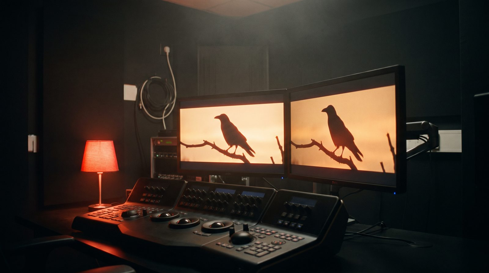

Bu hafta vizyona giren filmler: ne zaman açıklanır, nereden bakılır

Türkiye'de filmler cuma günü vizyona girer; liste haftanın başında belli olur. Vizyon takvimi, gişe verisi ve platform yayınları için güvenilir kaynaklar ve okuma yöntemi.
Cuma günü kuralı
Türkiye'de sinema haftası cuma başlar; yeni filmler cuma vizyona girer ve gişe haftası cuma-perşembe arasıdır. Dağıtımcılar vizyon tarihlerini aylar önceden duyurur, ancak liste son haftada değişebilir: bir film ertelenir, bir başkası eklenir. Bu yüzden "bu hafta vizyona girenler" haberi genellikle çarşamba-perşembe kesinleşir. Dizi & Film bölümündeki haftalık sayfa cuma sabahı çıkar; her film için dağıtımcı ya da yayıncı haberinin kaynağı ve tarihi yazılır.
Nereden bakılır
Vizyon listesi için en sağlam kaynak dağıtımcıların kendi duyuruları ve gişe takip sitelerinin haftalık vizyon tablolarıdır; Türkiye'de gişe verisini derleyen Box Office Türkiye haftalık listeyi ve izleyici sayılarını yayımlar. Sinema zincirlerinin seans sayfaları da o hafta hangi filmin gerçekten gösterimde olduğunu gösterir: listede olup salonda olmayan film olabilir. Dizi ve platform yayınları için ise yayıncının kendi takvim sayfası esastır; "yeni sezon ne zaman" sorusunun kesin cevabı yalnızca oradadır.
Öneri nasıl yazılır, nasıl yazılmaz
Bu bölümde film ve dizi önerisi beğeniyle değil ölçütle yazılır: tür, süre, yönetmen, nerede izlenir, kaynak. Puan vermeyiz; fragman ve afiş yayıncının telifidir, sayfaya alınmaz. Bir yapım şirketi olarak eklediğimiz katman şu: bir sahnenin nasıl çekildiğini, hangi ışıkla kurulduğunu arada yazarız, çünkü işimiz bu. İzleyici yorumu ve spoiler içermeyiz.
Ön gösterim ve seans
Bazı filmler cuma öncesi perşembe akşamı ön gösterimle başlar; ön gösterim seansları sinema zincirlerinin uygulama ve sitelerinde normal seanslardan ayrı listelenir. Bir film vizyon listesindeyken şehrinizdeki salonda olmayabilir: salon sayısı dağıtımcı ile sinema işletmesi arasında belirlenir. İzlemek istediğiniz film için en doğru kaynak, gideceğiniz salonun o haftaki seans listesidir; liste genellikle perşembe günü kesinleşir.
Dijital platformlar
Platform filmleri ve dizileri sinema takvimine bağlı değildir; yayın günü ve saati platformun kendi duyurusunda yazar. Sinemada gösterilen bir filmin platforma ne zaman geleceği ise dağıtım anlaşmasına bağlıdır ve önceden bilinmeyebilir. "Bu film hangi platformda" sorusunun kesin cevabı platformun kendi arama sayfasındadır; haberlerdeki tarih değişebilir.
Bu sitede nasıl yazıyoruz
Ekran bölümünde vizyon haftası, festival programı ve dizilerin yeni sezonu için ayrı yazılar çıkar. Her yazıda film ya da dizinin tarihi dağıtımcının veya yayıncının duyurusuna dayanır ve kaynak adıyla belirtilir; tarih açıklanmamışsa "henüz açıklanmadı" yazar, tahmin yürütmeyiz. Yazılar tarihle arşivlenir; "geçen ay neler girmişti" sorusunun cevabı bölüm sayfasında kalır.
Sık sorulanlar
Filmler neden cuma vizyona giriyor?
Türkiye'de sinema haftası cuma başlar; gişe haftası cuma-perşembe sayılır.
Liste ne zaman kesinleşir?
Genellikle çarşamba-perşembe; dağıtımcı erteleyebilir. Cuma sabahı sayfamız son hâli kaynağıyla verir.
Dizi yeni sezon tarihini nereden öğrenirim?
Yayıncı kanalın ya da platformun kendi duyurusundan; haberler bu duyuruya bağlanır.
Film vizyondan ne zaman kalkar?
Sabit bir süre yoktur; salon programı haftalık belirlenir, izleyici azaldıkça seans sayısı düşer.
Ön gösterim nedir?
Resmî vizyon gününden önce, genellikle perşembe akşamı yapılan ilk gösterimlerdir; seansları ayrıca listelenir.
Kaynaklar
- Box Office Türkiye — vizyon ve gişe
Tarih ve kural bilgisi yalnızca kurumun kendi yayınına dayanır; bir kural değiştiğinde yazı güncellenir ve güncelleme tarihi değişir.